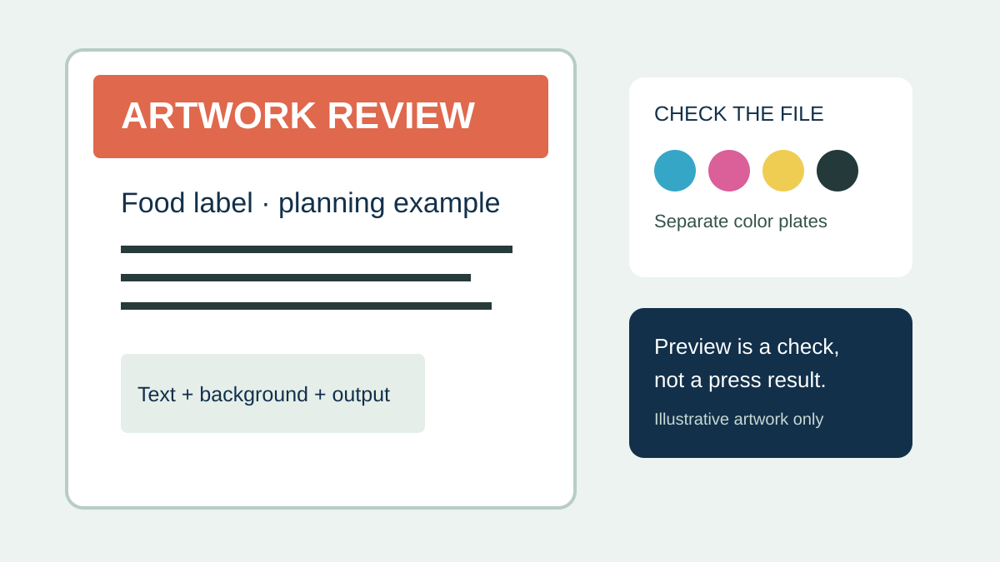
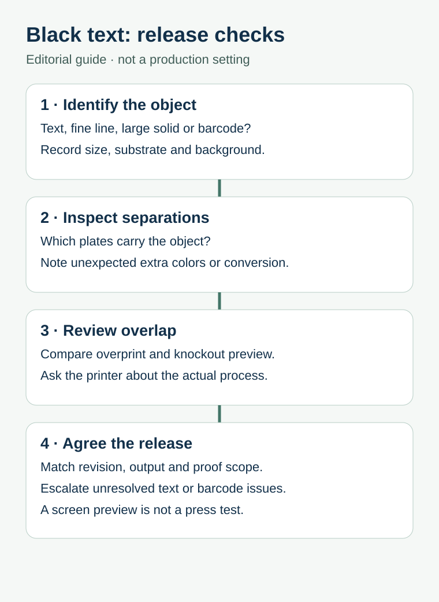

A food label can look crisp on screen while small black ingredients or storage text is built from several color channels. When the file is separated or processed for print, that detail may behave differently from a large black background. The useful decision is not to apply a universal black recipe to the entire label; it is to identify each object and agree how the actual printer will output it.
Inspect the final-size PDF, separate the small text from large solids, and confirm the treatment with the label printer before approval. A preview helps find questions; it does not establish the quality of the finished printed label.

Why the same black is not always the same object
A small line of text, a thin rule and a broad background have different jobs. A black created with several inks can give a large area a different appearance, but misalignment between those printed components can make fine detail less clear. A single black component may reduce that particular multi-plate alignment concern, but its appearance and visibility still depend on the print process, background and materials. Do not assume a particular color mix or setting is correct without the converter's file requirements.
Registration is one risk, not a diagnosis. Low contrast, very small type, an unsuitable file conversion, poor output resolution or an inappropriate substrate may also need investigation. A screenshot alone cannot identify which layer caused a problem. The file, the chosen print process and a relevant proof each provide different evidence.
Make a list before changing the artwork
| Object | Record for the printer | Decision to confirm |
|---|---|---|
| Small black copy | Actual size, color build, position and background | Suitable treatment for this press and material |
| Fine lines and icons | Final dimensions and color plates | Whether fine detail is reproducible |
| Large black solid | Intended appearance and adjacent colors | Agreed black build and print method |
| Barcode or QR code | Symbol type, size, background and intended use | Applicable quality requirements and verification |
| White or spot-color object | Named plate and intended appearance | Separate white/spot treatment and proof scope |
Do not convert the entire file to a single black merely to fix one line. A large black field, a spot color and a barcode may have different output requirements. Ask the responsible designer and printer to approve the affected object and the revised file together.
Inspect the supplied PDF, not just the design view


- Identify the production file. Record the SKU, artwork revision, intended dimensions and output file name. Make sure the reviewed PDF is the version intended for release.
- Inspect the separations. In a suitable preflight tool, check which process or spot plates contain representative small text and fine lines. Note whether the displayed build differs from the intended file specification.
- Review overlap. Compare the relevant objects with an overprint simulation enabled. Overprint and knockout change how overlapping objects are represented; neither is an automatic fix for every background or ink.
- Ask for a defined proof. State whether the question concerns copy, file separation, color appearance or actual fine-detail reproduction. A soft proof and a production sample answer different questions.
Adobe explains how to use overprint preview in Acrobat Pro and cautions that final output varies with the printer, RIP and output settings. Its output preview guidance also describes viewing color separations. These are software checks, not proof that a particular food label will print correctly.
Keep a barcode on its own approval path
A barcode is more than black text. Its symbol, dimensions, light background, quiet zone and production conditions need review against the applicable requirements and intended scanning environment. A successful phone scan alone should not be treated as a formal verification report. GS1's 2D retail implementation guidance discusses contrast, quiet zones, placement and verification for its defined retail context. Ask the relevant trading partner and printer what applies to your exact symbol and use.
For the separate report-to-lot decision, see barcode verification versus scanning. For white artwork, see white-object preflight; its white and spot-ink decisions should not be copied blindly to black text.
Use a file-to-proof handoff record
| Field | What to record |
|---|---|
| File identity | SKU, revision, PDF name and date; who owns final approval |
| Small detail | Locations and intended sizes of critical text and thin rules |
| Color and material | Observed color build, background, substrate and any white or spot layer |
| Output route | Printer's stated process, file requirements and any conversion to be made |
| Evidence | What the preview or proof actually covers, and unresolved limitations |
| Release | Change owner, revised file and explicit approval or hold |
If the text changes after approval, identify the revised file and ask whether the prior proof remains applicable to that change. Do not assume a previously signed proof approves every later export. The proof-change guide helps distinguish proof scope from artwork authority, while the artwork handoff guide covers the wider file package.
Send the critical details with your label inquiry
Share the intended finished size, substrate and background, the current artwork revision, and which small text or symbol needs review. Ask the printer to confirm the applicable file treatment and proof scope before release. Prepare a label specification inquiry; the contact page opens an email draft, and attachments can be sent through the listed email or WhatsApp route. Supply scope, timing and costs require confirmation.